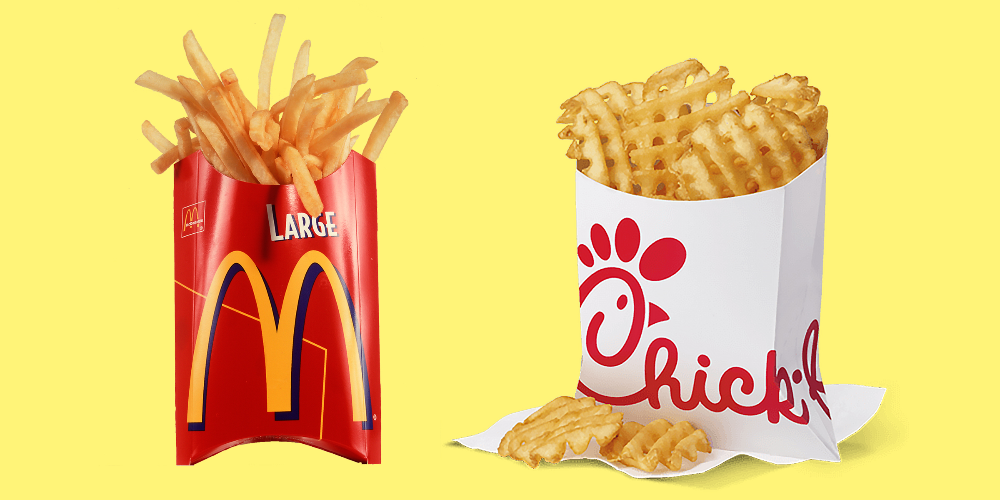
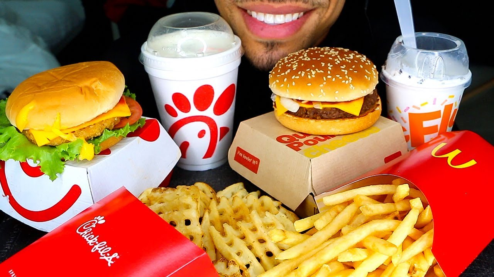

McDonalds is a lot cheaper that Chick-fik-a. I can buy a whole meal for everyone in my car and the total will come out to less than $30. Thats how you know the food is good. Also McDonalds has a lot more variety and Chick-fil-a only has chicken. Thats literally so boring. McDonald's fries are also superior to chick-fil-a. I just speak the truth.
 FRIESSAlthough McDonalds tastes a lot better than Chick-fil-a, Chick-fil-a is the healthier option. The Chick-fil-a One app is also pretty great, I get points and I can redem rewards. The only thing that's better at Chick-fil-a than McDonalds is their breakfast. I love chicken minis.
 Who is Healthier???